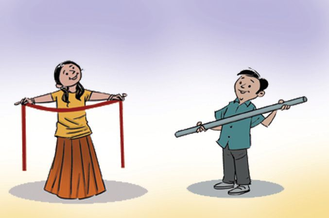
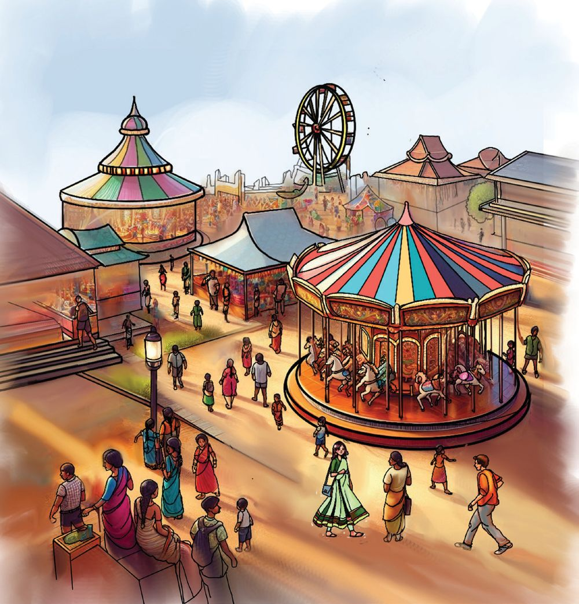
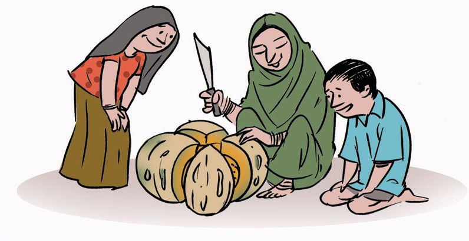

Halving Mother is frying Pappad. Fathima took one. Give half to your brother!
Its smaller
Mother folded and cut a pappad into two halves and fried the pieces for them.
Equal parts How do you cut a ribbon into two equal parts? What about a pipe?
119




Halving Mother is frying Pappad. Fathima took one. Give half to your brother!
Its smaller
Mother folded and cut a pappad into two halves and fried the pieces for them.
Equal parts How do you cut a ribbon into two equal parts? What about a pipe?
119


Lets halve!
○
○
○
○
○
○
○
○
○
Draw through the dotted line and split the rectangle into two equal parts. Colour one part.
Draw a line through the point at the centre of the circle and split into two parts. Arent they equal?
Colour one part We have divided a circle and a rectangle into two equal parts. Each part is called a half of the whole. Half means one of two equal parts.We write it as
1 2
.
How many parts?
Half means one of two equal parts.
What part of the circle is red? What part of the circle is blue?
120

Which of the pictures below show
1 2
? Put a P mark below them.
P
Lets colour! Colour
1 2
of each picture below:
121


Different halves See how
1 2
of a rectangle is coloured.
Are there other ways to show
1 2
of a rectangle?
Colour one half.
Sharing sweets Fathima came home from Theerthas birthday party with four sweets. I want some! Fawaz said. Fathima gave him half the sweets. How many sweets did she give?
Half of four is 2.
What if she had 6 sweets?
1 of 2
4 is 2.
Half of 16 eggs hatched. How many eggs are there? Half of the chicks are cocks. How many cocks are there?
There are 32 children in Fathimas class. Half of them are girls. How many girls are there? 122

How many when divided in half? Bag
2 numbers
Umbrella
2 numbers
Pen
4 numbers
Pencil
2 numbers
Crayon
8 numbers
Colour pen
1 dozen
Eraser
1 dozen
Vegetable garden Fathimas vegetable garden is rectangular. It is divided into 4 equal parts. Beans in one part, pumpkin in one part and amaranth in two parts.
Beans
Amaranth
Amaranth
Pumpkin
How many parts are there in all? And beans are grown in part Beans are grown in a fourth of the whole
123



garden. One of four equal parts is called a fourth and we write it as
1 4
.
A fourth is also called a quarter
What part of the garden is the pumpkin patch? How do we write it?
How do we write the part where amaranth is grown? Pumpkin problem They plucked a large pumpkin from the garden. And cut into four equal parts. How much is each part?
One part they put aside for thie use. How much is the remaining? 3 of four equal parts is called three fourth . We write it as
3 4
Fawaz took one piece of pumpkin to Abys home and Fathima took two pieces, one to Theerthas home and the other to Nandus home. How do we write the part Fawaz took?
And what part did Fathima take?
124
Three fourths is also called three quarters.

Coloured parts What part of each picture is coloured? Write in the box on the right.
Draw and colour In what all ways can we show
1 4
of a rectangle?
Do it in different ways and colour a quarter.
125

Find quarters Put P against those pictures with a quarter coloured.
Splitting letters Divide each letter into two parts and colour one part.
126